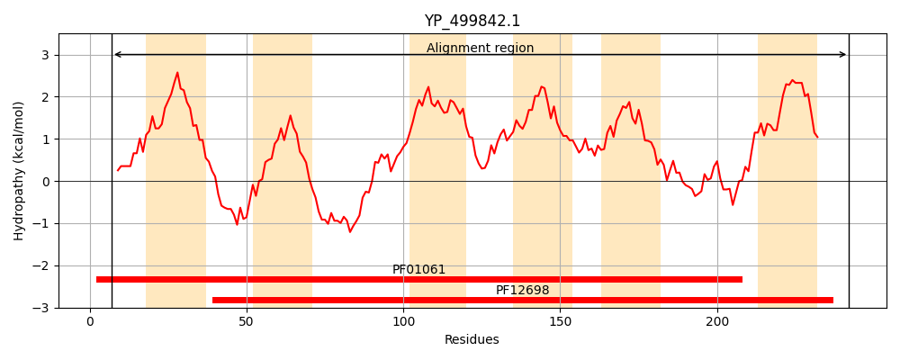
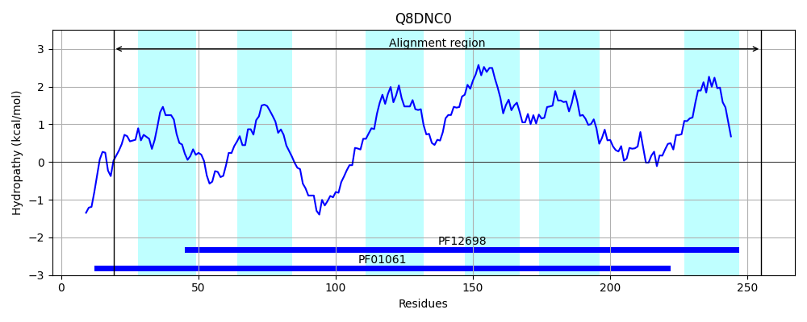
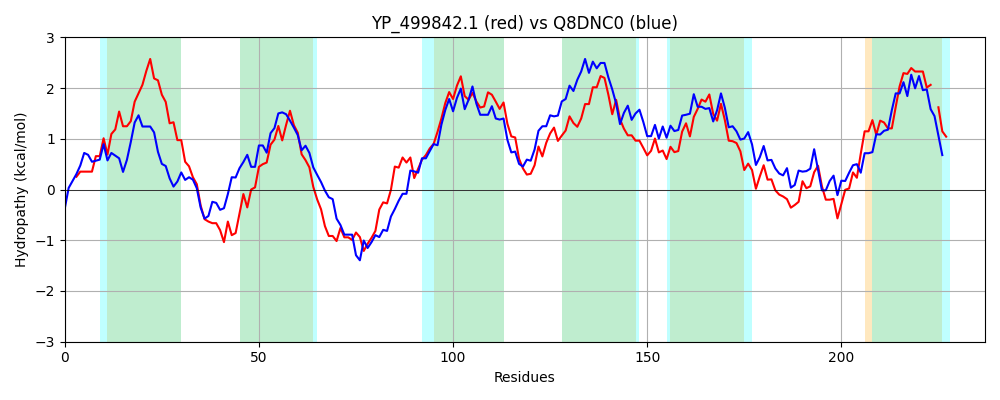

Hit Accession: Q8DNC0
Hit TCID: 3.A.1.142.1
Hit Description: gnl|BL_ORD_ID|16020 gnl|TC-DB|Q8DNC0|3.A.1.142.1 Putative uncharacterized protein OS=Streptococcus pneumoniae (strain ATCC BAA-255 / R6) GN=spr1816 PE=4 SV=1
Mach Len: 237
e:0.000000
Query TMS Count : 6
Hit TMS Count: 6
TMS-Overlap Score: 5.850000
Predicted Substrates:CHEBI:5476;glycolipid
BLAST Alignment:
Score: 408 , Bit scores: 161 bits, E-value: 3.5e-49, Alignment length: 237, Percentage identity: 33
Query: 7 KIEFKVIMRKKTTLILSILFPVIFYILFTSILELPEDVKPKFYKEYMYSMTVYSLLSFSLLTFPLDIINEKQNEWRQRLMVTPFTFTSYYISKVVKTMLQFAIAILVIFMVGHFYKGVAMSAVQWLESGIFLWLGASLLITFGILFSLLNDIQKTSALANIVTIGLAVLGGLWFPINTFPNWLQHVAHVLPSYHLRKLGVDIASNHHINLISFAIILLYALGSI-IAVYCISHFKRA 242
KIEF + R+ +LS+ P FY+ F+ I + F ++Y+ SMT +S++S ++ +FP+ + +K N W++ L +P YY+SK+ ++ + ++ILV+F VGHF +GV MS W+ + + L +G+ + G+ +LL Q S + N++ +GLAVLGGLW PI+ FP+W+Q V LP+Y L +L + INL + +L++++ + +Y H + A
Sbjct: 19 KIEFLLTKRQLIYYLLSVGMPTAFYLFFSGIYQDTPGELANFMRDYLISMTAFSMMSTAIFSFPVVLHTDKINNWQKTLRHSPVNMVEYYLSKITSMLVDYLVSILVVFSVGHFVRGVDMSLGNWIGAALLLIVGSIAFVALGLTLTLLPTSQLMSVVGNLLYLGLAVLGGLWMPISLFPDWMQVVGKCLPTYQLMELLKTFLNEGGINLSATVYLLVFSVVLFGLTIYLQGHKENA 255 | Protein Hydropathy Plots: |
|---|
|  |  |
Pairwise Alignment-Hydropathy Plot:
|
|---|
|  |